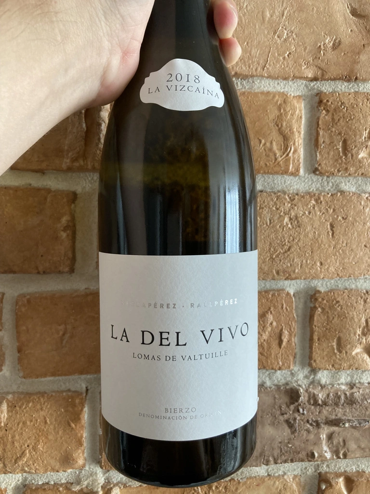

- Type
- White Still, Dry
- Producer
- Raúl Pérez
- Vintage
- 2018
- Location
- Spain, Bierzo DO
- Grapes
- Godello
- Alcohol
- 13.5
- Sugar
- 0.8
- Price
- 730 UAH, 619 UAH
- Cellar
- N/A
Ratings
2020-11-10 - 8.50
Sophisticated and complex wine from famous producer. Elegant aroma full of salted pebbles, citrus, yellow flowers and stone fruits. Well structured, long and evolving finish. Flavours of iodine and shells. Wonderful QPR.
2021-07-27 - 8.00
That case, when I am not sure if the wine is spoiled or not. Interesting bouquet of wet wool, bell pepper, flint, lime, yellow flowers and iodine touch. Not fruity, sophisticated, but has some unpleasant odor that doesn’t go away with time and I don’t remember it from the last time I tasted this wine. Flavourful: lime, bitter apple and motor oil (shells?). Well balanced and well structured. Confusing experience. Giving it such a high score mainly for complexity, but it could be more if not for this odor.